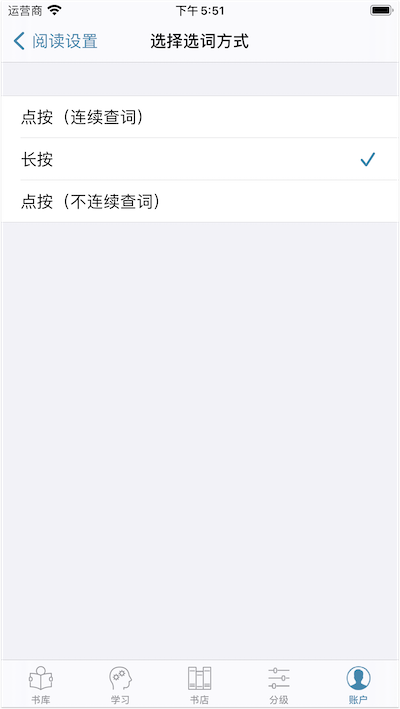
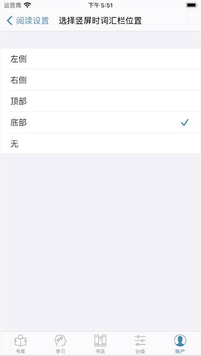
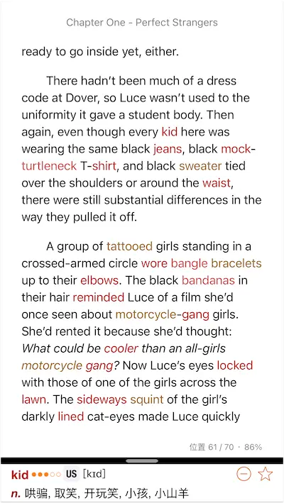
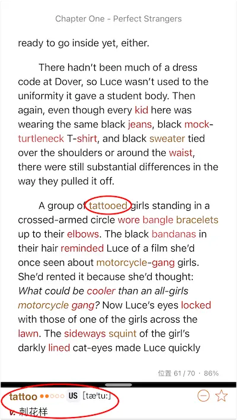
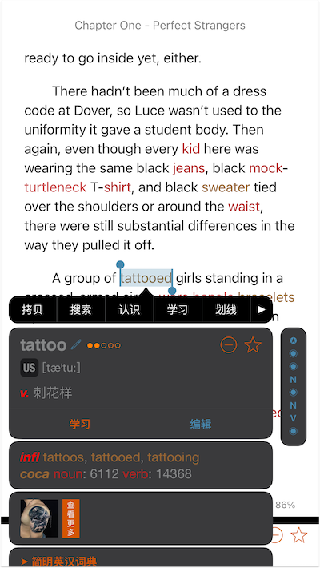
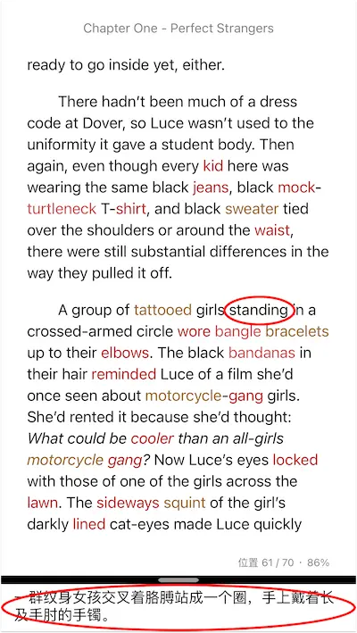
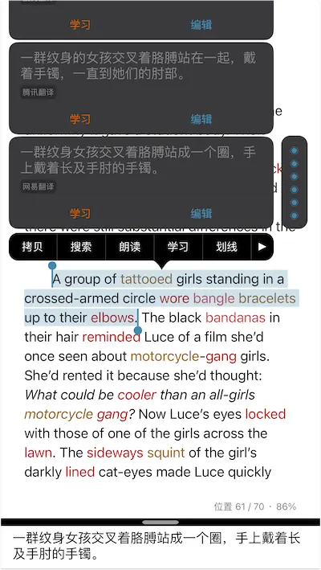

当您需要快速理解书籍内容，可按以下步骤设置阅读参数进入速读模式。设置后，您只需点按手势即可快速查看单词解释或者句子中文翻译，提升阅读理解速度。
如何设置【速度模式】
-
依次点击【设置】→【阅读设置】→【阅读标记设置】。选择【标记词频】或【标记词汇表】，选择或导入您希望重点学习的单词或生词表。设置后，书中将自动高亮显示这些单词。
-
在【阅读标记设置】页面，点按【忽略词汇表】→【管理词汇表】，选择或导入您已认识的单词列表。设置后，我们将从第一步设置的词汇表中过滤掉已认识的词汇，不高亮。
-
在【阅读设置】页面，点按【阅读时选词方式】，将选词方式设置为“长按”。

- 在【阅读设置】页面，点按【竖屏时词汇栏位置】，选择“底部”。

如何速读
进入速度模式后，打开任意书籍，阅读界面将变为：

在阅读过程中，对于高亮的单词，只需直接点按该单词，底部的词汇栏将显示该单词的解释。比如，点按上面页面的单词“tattooed”，底部的词汇栏将变为：

如果您设置了单词自动发音，点按单词也会自动朗读该单词。您也可以点按单词音标触发单词朗读。如果您想将该单词加入生词表中，点按底部的五角星图标即可。如果您希望查看单词更详细的解释，可以长按该单词，或者点按底部词汇栏。

若查看tattooed的解释后，您仍不能理解句子的意思，您只需点按句中未高亮的单词，比如上页中的“standing”，底部的词汇栏就会显示句子的中文翻译供你参考。
注意：此处的句子翻译由三方翻译引擎利用自然语言处理技术提供，并非人工翻译。

听阅内置多个翻译引擎。词汇栏会优先显示第一个付费翻译引擎的翻译。若您未选择付费翻译引擎，就会显示第一个免费翻译引擎的翻译。若您在【管理翻译引擎】页面选择了多个翻译引擎，您可以双击句子或者点按底部词汇栏查看全部翻译引擎的翻译。
